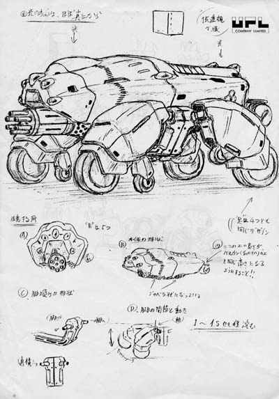
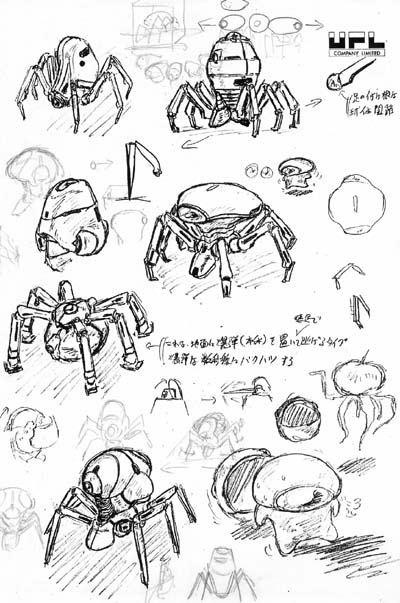
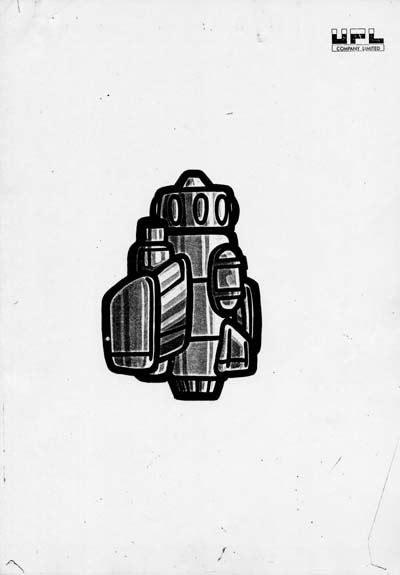
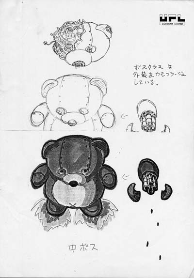
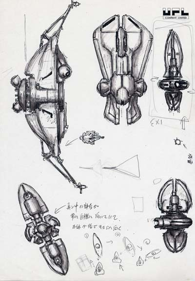
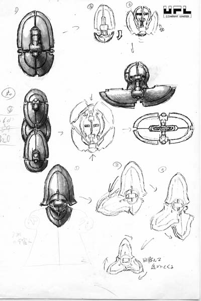
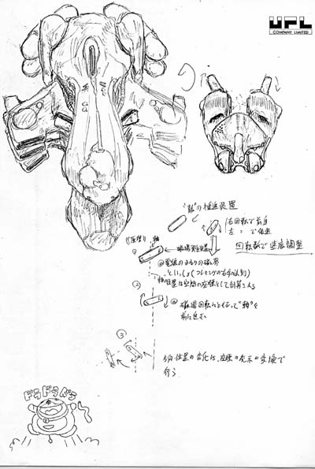
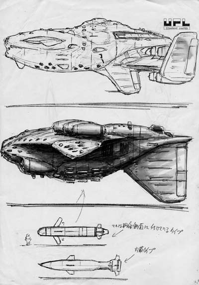
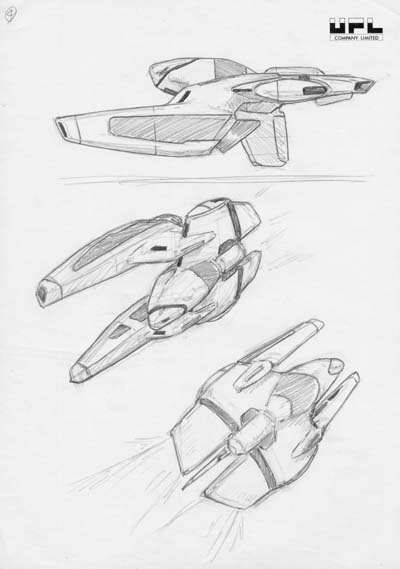
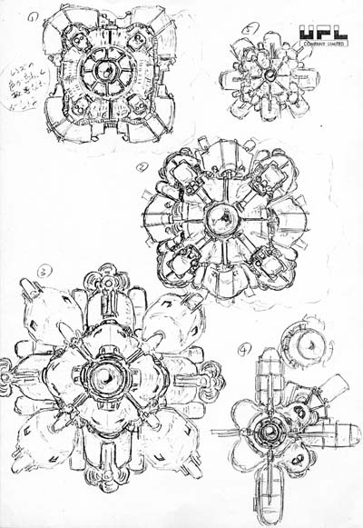

UPL is an easy company to underestimate.
To many arcade players, the name is a shorthand for a compact cluster of unusual Japanese games: NOVA2001, Ninja-kun, Penguin-kun Wars, Atomic Robo-Kid, Omega Fighter, Bio-Ship Paladin, Vandyke, Acrobat Mission, and Strahl. Look at the company only through those titles and UPL seems to fit a familiar pattern: a small 1980s Japanese video-game developer, briefly productive, creatively eccentric, and gone by the early 1990s.
That version is not exactly wrong. It is simply missing most of the company.
Universal Playland existed for more than a decade before many of the games now associated with UPL appeared. Its roots were not in a software studio. It belonged to the broader Universal amusement-business orbit in Tochigi Prefecture and spent years selling, distributing, exhibiting, and handling equipment from multiple manufacturers. It dealt in crane and prize machines, electromechanical amusement equipment, pachinko-related conversions, and third-party video games. Period advertising shows it functioning as a sales company inside the Universal group long before a tiny internal development department began learning how to make original arcade hardware and software.
Even the apparently simple question “How many arcade games did UPL make?” turns out to be more complicated than the usual database total.
A former-UPL-developer archive preserves a nineteen-title arcade works list running from Mouser through Koutetsu Yousai Strahl. But at least four of those nineteen were developed by NMK and handled or published by UPL. Strahl itself is best classified as a UPL/NMK co-production. Return of the Invaders, which is routinely added to modern UPL game lists, is absent from the former-developer list and contains evidence pointing toward COMIX involvement. Dorodon, from 1982, may actually be an earlier Universal Playland development made for Falcon, but the surviving evidence is not yet strong enough to place it inside the locked count.
The company therefore has to be reconstructed by role rather than logo.
UPL developed some games internally. It published games made elsewhere. It collaborated with outside companies. It sold products from companies that had no development connection to UPL at all. It continued making or handling electromechanical amusement machines even after its video-game business became established. It used freelance talent. It maintained a tiny development operation that could produce strikingly original work with very few people. And when the company failed in 1992, it did so while several projects were still alive, some almost finished.
The result is not the story of a minor arcade label that made a couple dozen games and disappeared. It is the story of an amusement company that repeatedly changed what it was.
THE UNIVERSAL PLAYLAND YEARS — BEFORE UPL WAS “UPL”
The exact founding date most commonly associated with Universal Playland is 2/29/1972. Unlike many repeated arcade-history dates, this one has a traceable source chain: Japanese research specifically attributes it to a company guide produced during the company’s own era. That original guide has not yet been recovered for direct inspection, so the date deserves a small qualification. The year 1972, however, is independently supported by contemporary Game Machine reporting after the company’s collapse.
What Universal Playland actually was at the beginning matters more than the date alone.
A later Game Machine account described the company’s early business as including crane-game manufacture and the conversion of pachinko equipment for arcade use. That description fits the broader amusement environment around Universal in the 1970s. Universal Playland was based in Oyama, Tochigi Prefecture, the same regional environment in which Universal’s amusement operations were developing, and contemporary trade material repeatedly links Universal Playland to the larger Universal commercial group.
The relationship should be described carefully.
Modern summaries sometimes collapse Universal Playland into “Universal’s arcade division” or call it a subsidiary without qualification. Period documents show something more specific. A 1975 Game Machine advertisement presented a group of separately named Universal-related companies. Universal Co., Ltd. was identified as a manufacturer. Universal Sales Co., Ltd. was a general seller. Universal Playland appeared separately among the Universal-group companies and sales contacts.
By 1978, Game Machine’s company directory made the separation unusually visible. On the same printed page, Universal and Universal Sales are listed under Kazuo Okada while Universal Playland has its own entry under representative director Harumi Sagiya, 鷺谷晴美.
That does not prove that Universal Playland was financially independent of Universal. It does prove that it should not be described as if it were merely an internal department.
The best current language is that Universal Playland was a separate Universal-group or Universal-affiliated company. Later Japanese reference material describes it as a Universal sales subsidiary and electromechanical-development arm, a description consistent with the trade record, but the exact historical shareholding has not yet been recovered from a corporate register.
That distinction becomes important as soon as the surviving advertisements are examined.
SELLING EVERYBODY’S GAMES
Universal Playland’s early video-game history is not primarily a development story. It is a distribution story.
By the late 1970s, the company appears repeatedly in Japanese trade advertisements selling amusement equipment from numerous makers. A 1979 advertisement went so far as to describe products from twenty-four manufacturers being handled through the commercial network in which Universal Playland participated.
Other period advertising makes the point visually.
Universal Playland appears as a sales contact for machines including Space Invaders, Submarine, Gee Bee, and Getaway DX. In 1980, an advertisement offered Carnival, Space Fire Bird, Cheeky Mouse, and Tropical Dive through a sales block that included Universal Playland alongside other firms.
Those titles did not all come from one developer. Their shared appearance under a Universal Playland commercial heading therefore tells us what the company was doing: selling and distributing amusement equipment.
This is one of the most important corrections for reconstructing UPL’s catalog. A flyer carrying Universal Playland or UPL branding cannot automatically be counted as a UPL-developed game. Even respected flyer archives sometimes categorize material under a company that does not match the printed artifact. A useful example is Mouser: TAFA catalogs a 1983 U.S. flyer under UPL, but the flyer itself is branded COSMOS in Las Vegas and carries a 1983 Cosmos copyright line. Archive metadata is therefore discovery evidence, not a substitute for reading the artifact.
That problem is especially obvious in the pre-Mouser era.
Surviving sales literature for Carnival and Super Moon Cresta has been cataloged under UPL. That material is historically valuable because it documents the company’s presence in the video-game trade. But it does not make Carnival or Super Moon Cresta UPL creations.
The same caution applies in reverse. NOVA2001 was developed by UPL, yet surviving 1983 U.S. sales literature uses the Universal name. Commercial branding and development authorship are not interchangeable.
For Universal Playland, they rarely were.
THE AMUSEMENT COMPANY BETWEEN DISTRIBUTION AND DEVELOPMENT
By the early 1980s, Universal Playland was becoming something more complicated than a distributor.
Game Machine photographed a Universal Playland booth at the 20th Amusement Machine Show in 1982. Japanese specialist research associates the booth with machines called Sne-Q, Destroyer, and Friday, although those individual title assignments still need direct period-caption or advertisement confirmation before being treated as fully locked.
Other amusement-machine evidence is stronger.
Preservation research identifies Lucky Crane in the 1982–83 period and Vanish Hole in 1983. Game Machine’s coverage of the 21st Amusement Machine Show in 1983 explicitly states that Universal Playland displayed a television game called Robot while continuing to handle prize machines and equipment from other manufacturers.
The significance of this mixed booth is easy to miss.
Universal Playland had not transformed overnight from distributor into software developer. It was simultaneously operating in multiple roles: seller, equipment handler, maker of amusement machines, and emerging video-game creator.
Even after UPL became known for original arcade games, its non-video amusement activity continued. Specialist machine records identify Super Elephant in 1988, associated with UPL and Wako Electric, and Lucky Crane IV in 1989.
The arcade-video catalog is therefore only one branch of the company’s output.
For this reason, Arcade Side B separates Universal Playland/UPL activity into three broad categories: internally developed or co-developed video games; electromechanical, prize, crane, and other amusement machines; and third-party products distributed or marketed by the company.
Without those categories, the company’s apparent output becomes both inflated and distorted.
THE NAME CHANGE — UNIVERSAL PLAYLAND BECOMES UPL
The corporate name changed from Universal Playland Co., Ltd. to UPL Co., Ltd. on 11/1/1983.
That date is unusually well supported for such an obscure company. Japanese historical research traces it to the same period company guide used for the exact founding date. The change is also supported independently by contemporary Game Machine material. The relevant December 1983 issue contains a small item headed 社名変更 — “Company-name change.”
The surviving public scan is not clean enough to responsibly reconstruct the full tiny notice word for word, so no invented OCR transcription is used here. The underlying event, however, is strong.
What remains uncertain is what the rename meant legally.
Nothing currently proves that the 1983 name change was a spin-off, buyout, or formal break from Universal. It may have reflected a shift in corporate identity as Universal Playland’s own game-development business became more important. It may have accompanied changes in ownership or organization. Without the company guide or historical corporate register, those possibilities should remain possibilities.
The timing nevertheless fits the company’s changing character remarkably well.
In the same period that Universal Playland was becoming UPL, the company’s internal video-game development operation was finally becoming a recognizable creative unit.
THE TINY DEVELOPMENT DEPARTMENT
Ryuichi Nishizawa’s recollections provide the clearest surviving first-person view of UPL’s transition into original game development.
When Nishizawa joined the company, the development department was just beginning. He remembered only two technical employees in the game-development operation at that stage. The scale was tiny enough that early projects became exercises in learning the entire process rather than narrowly defined specialist assignments.
Mouser was one of those projects.
Nishizawa later described Mouser as essentially a two-person development. His own responsibilities extended across game design, graphics, sound work, sequencing, and programming. That breadth was not unusual in a very small studio, but it immediately distinguishes early UPL from the larger Japanese game companies where hardware, programming, art, sound, and planning were already more heavily departmentalized.
Mouser is also the first title on the former-developer UPL arcade works list.
That does not necessarily make it the first piece of video software ever connected to Universal Playland. Dorodon may predate it as a Universal Playland development for Falcon. But Mouser marks the beginning of the clearly documented internal UPL lineage.
After Mouser came a much more important technical step.
NOVA2001 required UPL to move beyond simply learning game programming and into original arcade-board development. Nishizawa credited Nobuyuki Narita with the engineering side of UPL’s hardware and remembered Narita as the designer of the company’s boards. Nishizawa himself handled major game-side responsibilities including design, character work, and programming.
That combination—Narita on the hardware side and an extremely small software team—helped establish the technical base for the games that followed.
NOVA2001’s arcade release year can now be locked to 1983. Game Machine’s January 1, 1984 industry-news column states that UPL had unveiled NOVA2001 and sold it in mid-December 1983. That contemporary report outweighs the later year shown on the former-developer works page and removes what had been one of the project’s lingering timeline conflicts.
Whatever the calendar detail, NOVA2001 clearly belongs to the moment when Universal Playland stopped being merely a company that sold video games and became a company capable of designing its own arcade platform.
NINJA-KUN AND THE FIRST UPL IDENTITY
If NOVA2001 proved that UPL could build original arcade hardware, Ninja-kun: Majou no Bouken helped give the company a recognizable creative identity.
Nishizawa described his own direct involvement in Ninja-kun’s design and programming. The game’s compact stages, vertical movement, enemy behavior, and acrobatic jumping gave it a feel distinct from the maze games and conventional shooters surrounding it in Japanese arcades.
It also became the foundation for one of UPL’s most durable properties.
Ninja-kun would later continue through Ninja-kun: Ashura no Shou, known internationally in some contexts as Ninja-Kid II, and the character’s legacy ultimately survived the company itself. Hamster specifically named Ninja-kun among the UPL-related properties when it announced acquisition of UPL game rights in 2016.
The commercial history of Ninja-kun also reinforces another UPL pattern: development and distribution did not always belong to the same company. UPL could create the game while another company handled important sales or market roles.
Raiders5 followed in the same early development period. Nishizawa recalled producing it rapidly—roughly four months—and handling nearly everything except sound. The game further demonstrated how much responsibility could sit with one designer-programmer inside a small development group.
After Ninja-kun, however, the structure began to change.
Nishizawa remembered the UPL development operation dividing into two teams. One branch remained associated with his work; the other, under Tsutomu Fujisawa, produced Penguin-kun Wars.
That split matters because Fujisawa would become the central creative figure of the company’s later arcade period.
PENGUIN-KUN WARS AND THE SECOND UPL
Penguin-kun Wars looks deceptively simple: two animal opponents throw balls across a table, trying to clear their own side before time expires. Yet its mixture of timing, competition, character personality, and sports-like rules made it one of UPL’s most enduring concepts.
More importantly for the company history, it represents the emergence of a second creative center inside UPL.
Tsutomu Fujisawa appears again and again in the company’s later games: design, characters, sound, direction, planning, and general project leadership. By the late period, former employees remembered him as the head of the Tokyo development department.
The development philosophy attributed to him fits UPL’s catalog unusually well. A former programmer remembered asking why the company made such strange or unconventional games. Fujisawa’s answer, in essence, was that a small company could not survive by making the same things as larger competitors.
Whether remembered word-for-word or not, the idea explains a great deal.
UPL’s later games often seem to be searching for a mechanism that other companies had ignored. Penguin-kun Wars is part sports game, part action game. Mutant Night is a platform-shooter built around a bizarre elastic creature. Atomic Robo-Kid combines horizontal shooting with a squat robot character and branching movement. Omega Fighter places its scoring logic at the center of how aggressively the player approaches enemies. Bio-Ship Paladin gives the player an aiming-controlled secondary weapon in a conventional scrolling-shooter frame.
UPL rarely had the resources to dominate a genre by scale.
Its better strategy was to twist the genre.
THE PEOPLE BEHIND THE MIDDLE PERIOD
The credits preserved in UPL’s arcade software reveal a recurring group rather than a sequence of anonymous subcontractors.
XX Mission credits Tsutomu Fujisawa in game, character, and sound roles alongside programmer Satoru Kinjo, artist Akemi Tsunoda, Kiyoshi Yokoyama, and Takashi Hayashi. Ninja-kun: Ashura no Shou again shows Fujisawa, Kinjo, Tsunoda, and Hayashi. Mutant Night includes Fujisawa as designer, Takashi Hayashi as programmer, and recurring visual staff including Akemi Tsunoda and Noriko Fujisawa.
Ark Area and Atomic Robo-Kid continue the pattern.
Atomic Robo-Kid’s credits include Fujisawa, Toshio Arai, Noriko Fujisawa, Akemi Tsunoda, Kohji Abe, and others under the UPL production identity. The importance of these names is not simply biographical. They show that a genuine internal development culture existed.
This is why manufacturer databases alone cannot settle UPL’s output count. The strongest evidence is not the company name in a database field. It is the repeated appearance of the same people across projects, supported by former-employee recollections and surviving code/credits.
That staff continuity becomes especially useful in the late 1980s, when UPL’s relationship with NMK becomes much closer and the commercial labels become harder to interpret.
PART TWO — THE LATE UPL YEARS
THE NMK RELATIONSHIP — WHEN THE COMPANY NAME STOPS TELLING THE WHOLE STORY
By the late 1980s, a list of “UPL games” begins to hide as much as it reveals.
The clearest reason is NMK.
Nihon Maicom Kaihatsu was another relatively small Japanese developer whose games frequently appeared under other companies’ names. UPL and NMK became closely intertwined enough that several releases long associated with UPL turn out to have been NMK productions.
The former-UPL-developer works list includes Urashima Mahjong, Task Force Harrier, USAAF Mustang, and Black Heart. Strong specialist development research attributes all four to NMK rather than to UPL’s internal team.
Task Force Harrier is the easiest case because former UPL employees remembered it that way themselves. The game was part of the UPL commercial catalog, but the people who worked inside UPL did not remember it as a UPL-developed project.
USAAF Mustang and Black Heart belong to the same wider pattern. UPL served as publisher, market identity, or commercial handler while NMK performed the development.
This is why Arcade Side B does not simply say that UPL “made nineteen arcade games.”
The former-staff works page is a corporate works list, not a pure developer list.
The distinction is more than bookkeeping. It shows how small Japanese arcade companies survived in a business where development, publishing, manufacturing, sales, and licensing were constantly mixed among firms. UPL could fill holes in its release schedule with outside-developed games. NMK could gain a market route through another company’s name. The player saw a UPL logo or a UPL listing. The actual production history could be different.
Koutetsu Yousai Strahl pushes the relationship one step further.
Strahl is not adequately described as either “UPL game” or “NMK game.” The surviving evidence points toward co-production. The credits contain a substantial late-UPL staff group, and former UPL material identifies the project internally as TSG-2. Yet repeated technical-history records identify NMK as co-producer and Taito as the sales company.
Strahl therefore sits in its own category: a documented UPL/NMK co-production.
That leaves fourteen titles in the former-staff nineteen-title list that can currently be supported as UPL-only internally developed commercial arcade games.
The number could eventually become fifteen if Dorodon is proven as an earlier Universal Playland development for Falcon. But that would be an addition from before the formal staff works list, not a reason to pretend every game sold by UPL came from the same internal team.
OMEGA FIGHTER — UPL WITH AN OUTSIDE DESIGNER INSIDE IT
Omega Fighter demonstrates a different kind of collaboration.
The game can still be treated as a UPL development, but the central design has been attributed to Fukio Mitsuji, better known in game-history circles as MTJ.
Mitsuji had previously worked at Taito and is most famously associated with Bubble Bobble. Industry recollection identifies him as the actual game designer of Omega Fighter while operating outside his former Taito role.
The surviving story even explains one of the game’s stranger credit details. Rather than using his normal name or the MTJ identity, Mitsuji reportedly avoided an ordinary public credit. The high-score initials “IWATANI” have been remembered as a one-off alias or homage.
That outside contribution did not make Omega Fighter an outsourced game in the same sense as Task Force Harrier.
The surrounding evidence remains tied to UPL. Recurring UPL personnel appear in the production. Nobuyuki Narita and artists such as Akemi Tsunoda and Noriko Fujisawa are part of the wider credit trail.
The distinction matters because small developers often relied on individual freelancers without surrendering the development identity of the entire project.
Omega Fighter also fits UPL’s preference for taking an established genre and making one design decision dominate the experience.
At first glance it is a vertical shooter. The unusual part is the scoring system. Players are rewarded for fighting close to enemies, turning physical risk into the foundation of score play. The game pushes the player toward the danger rather than merely asking for survival.
That idea—taking a familiar arcade form and bending the player’s incentives—feels very UPL.
THE TSG SERIES — EXPERIMENTS HIDING BEHIND THREE DIFFERENT TITLES
Former employees preserve one of the most useful pieces of late-UPL internal terminology: TSG.
TSG appears to have meant “Test Shooting Game.”
The label linked three projects that the public would never have recognized as a series.
TSG-1 became Uchuu Senkan Gomora, later known internationally as Bio-Ship Paladin.
TSG-2 became Koutetsu Yousai Strahl.
TSG-3 was Kaisoku! Sparrows!!, an unreleased shooter.
The name explains the relationship better than the themes do. These games were experiments in shooting-game mechanics.
Bio-Ship Paladin is the clearest example. The player controls a large biomechanical craft with a conventional rapid-fire weapon, but its defining feature is a second aiming system. Rather than simply spraying the screen, the player can direct a powerful secondary attack toward specific targets.
The arcade credits expose a large portion of the late UPL staff network: Tsutomu Fujisawa, Isamu Yanagida, Kinya Aoyama, Mutsuo Kaneko, Miho Urushibara, Shiho Sasaki, Yoshio Nagashima, Nobuyuki Narita, and others. The credit sequence even includes “UPL all staff.”
Vandyke, another late action game, shows many of the same names orbiting the company: Fujisawa, Narita, Nagashima, Kaneko, Minoru Tomizawa, and Toshio Arai.
Acrobat Mission was yet another shooter, but former staff remembered that it began as an Omega Fighter sequel project before developing into its released identity. Its credits include Mutsuo Kaneko as game designer, Toshio Arai in programming, and recurring UPL graphics and sound staff.
Strahl then pushed the TSG experiments into a co-production with NMK.
Taken together, the late games do not look like the output of a studio coasting toward failure.
They look like a company actively iterating.
THE TOKYO OFFICE — ABOUT TEN PEOPLE ABOVE A YOSHINOYA
The scale of UPL’s late development room is one of the most surprising facts in the project.
A former programmer remembered the broader company having roughly seventy people at one point, yet the Tokyo development operation itself was around ten.
That figure should not be confused with the thirty-nine employees reported by Game Machine at the moment of bankruptcy. They refer to different dates or organizational scopes.
The Tokyo team worked in the Ueno/Okachimachi area on the third floor of a building with a Yoshinoya restaurant on the ground floor.
It was not a glamorous studio.
A programmer who first visited on 11/27/1990 and joined formally in April 1991 remembered an environment where new staff were expected to learn by doing.
The tools were real arcade-development tools.
A new programmer could be handed a PC-9801VX, 68000 in-circuit-emulation equipment, a production game PCB such as Task Force Harrier, and an old table cabinet. Early exercises involved hardware-level work and writing a test mode so the programmer understood the I/O and board structure.
Then came the more entertaining part.
The training exercise became a functioning internal game.
Former employees called one version Omega Fighter 2. Rather than starting with a blank asset set, trainees reused graphics resources from existing games, including Omega Fighter object ROMs and Vandyke background material. The goal was not to create a marketable sequel. It was to force a new programmer to build the systems that an arcade game required.
A later exercise was nicknamed Omega Fighter 3 and added more complicated enemy behavior, aimed attacks, homing logic, collision work, demo recording, and multi-jointed bosses.
The employee writing about the experience joked that an Omega Fighter 4 probably would have existed for the next trainee if UPL had survived.
These internal games are historically important even though they were never commercial products.
They show exactly how the small development operation reproduced its skills.
UPL did not train new programmers through a large formal curriculum. It gave them arcade hardware and made them build games.
WHY MAKE WEIRD GAMES?
The late development department was headed by Tsutomu Fujisawa.
A former employee preserved a conversation that captures how the group thought about its place in the industry.
The programmer wondered why UPL kept making odd games instead of following safer commercial patterns. Fujisawa’s remembered response was essentially that a small company could not survive by doing the same thing as the large companies.
The statement is retrospective and should not be transformed into a polished corporate slogan. But it matches the product history remarkably well.
UPL did not have Sega’s production scale, Namco’s engineering organization, Konami’s international reach, or Taito’s enormous location and distribution infrastructure.
It could not win by making a larger version of somebody else’s hit.
It could, however, make something strange enough to be noticed.
That helps explain why UPL’s games often feel more experimental than their market position would suggest.
Sometimes the result worked.
Sometimes it produced a location-test failure that vanished.
And sometimes the experiment survived only because one employee smuggled out a ROM when the company collapsed.
THE GAMES THAT NEVER CAME OUT
The unreleased UPL material changes the final years from a decline story into an interrupted-development story.
BREAK SHOW was an unreleased beat-’em-up. Original design material survives through the former-employee archive.
Kaisoku! Sparrows!! was TSG-3, the next shooting-game experiment after Bio-Ship Paladin and Strahl.
Its survival story is remarkable.


When UPL collapsed, creditors moved against the company’s assets. Planner Tomi removed the sprite ROM from the Sparrows board before valuable equipment disappeared from the office. Without the ROM, the board appeared useless. The ROM survived separately and was eventually restored to the board, which then ran again.


A game that could easily have become a title name in an employee’s memory instead remained physically recoverable because one part had been removed at exactly the right moment.
Other projects were less fortunate.
Jewels was a puzzle game that reached location testing but apparently failed commercially. Former staff later recognized a transformed version of its ideas in the Korean game Many Block.
An animal-versus-animal fighting prototype existed during the period between the first Street Fighter and Street Fighter II. The former staff archive uses an informal “Animal Kingdom” style description for the idea. It apparently died before reaching a normal location-test life.
UPL also explored an arcade Bomberman project. Staff recollection says the licensing terms prevented it from proceeding.
Koei approached UPL about an arcade Nobunaga no Yabou project, and an experimental sample with a Populous-like approach was started before the proposal disappeared.
A PC Engine version of Ninja-kun: Ashura no Shou was substantially playable when UPL failed.
Dempa Newspaper Co. was reportedly close to finishing an X68000 version of NOVA2001 and was waiting on licensing approval when the bankruptcy stopped the process.
UPL had Neo Geo development equipment as well. A Vandyke technical sample existed, then disappeared during the bankruptcy.
This is the material that broad game databases usually cannot capture.
A database records what shipped.
A company history has to record what was still alive when the doors closed.
THE FINAL YEAR — SALES UP, CASH GONE
UPL’s bankruptcy is one of the strangest parts of the story because the available numbers do not describe a company whose sales had simply evaporated.
Game Machine reported the failure in its 4/15/1992 issue.
According to the contemporary account, UPL failed on 3/4/1992 after a second company check was dishonored because of insufficient funds. A lawyer was appointed to direct liquidation of the company’s assets.
Debt was estimated at approximately ¥2.5–3.0 billion.
UPL had thirty-nine employees at the time.
The article also reported something that makes the collapse harder to explain: revenue for the fiscal year ending October 1991 had been ¥3.465 billion, an increase of 49 percent over the preceding year.
A company could have rising revenue and still be insolvent, of course.
High revenue says nothing by itself about margins, borrowing, inventory, receivables, debt maturity, or cash flow.
But the figure makes a simple “people stopped buying the games and UPL died” explanation untenable.
Game Machine also mentioned a ¥200 million bad-debt incident in 1984, but the surviving report does not say that this one event caused the 1992 failure.
The exact debt structure remains one of the few important archival gaps.
The contemporary article said the final debt total was uncertain because president Harumi Sagiya and other key personnel could not be located at that stage.
That statement should be treated carefully.
It is a report about what the trade paper understood during an unfolding bankruptcy, not evidence of criminal conduct and not a license to speculate about why anyone was unavailable.
What can be said is that the failure was abrupt enough to shock at least part of the development staff.
THE DAY AFTER
The former-employee archive gives the bankruptcy an immediacy that financial numbers cannot.
Tokyo developers had heard rumors that the company’s finances were poor. Even so, the end came as a surprise.
Former staff remembered the office being locked by creditors. Employees later entered under supervision, one at a time, to retrieve personal belongings from the disturbed development room.
Hardware, artwork, prototypes, tools, and work-in-progress material were suddenly assets in a financial collapse rather than pieces of a functioning game studio.
The employees’ recollections include one especially tantalizing detail: stacks of Mega Drive Uchuu Senkan Gomora inventory.
The story passed among staff that the stock was unsold or that wholesalers were not accepting it.
It is an important lead.
It is not yet a proven cause of bankruptcy.
Without distribution records, creditor schedules, or a detailed insolvency file, the responsible conclusion is simply that substantial inventory may have been sitting inside the company around the time of failure.
The distinction matters because dramatic stories have a tendency to harden into “facts” after enough retellings.
UPL deserves better than that.
The bankruptcy file, if any usable portion still survives in Japan, is therefore one of the project’s remaining closure targets.
THE COUNT — WHAT UPL ACTUALLY DEVELOPED
By this point the product-count problem can be stated clearly.
The former-UPL-developer works list contains nineteen commercial arcade titles:
Mouser
NOVA2001
Ninja-kun: Majou no Bouken
Raiders5
Penguin-kun Wars
XX Mission
Ninja-kun: Ashura no Shou / Ninja-Kid II
Mutant Night
Ark Area
Atomic Robo-Kid
Urashima Mahjong
Omega Fighter
Task Force Harrier
USAAF Mustang
Uchuu Senkan Gomora / Bio-Ship Paladin
Vandyke
Black Heart
Acrobat Mission
Koutetsu Yousai Strahl
That list should be treated as UPL’s corporate arcade works/handled list.
It should not be treated as nineteen internally developed games.
Four titles have strong NMK development attribution: Urashima Mahjong, Task Force Harrier, USAAF Mustang, and Black Heart.
Strahl is best classified as a UPL/NMK co-production.
That leaves fourteen confirmed/supportable UPL-only internal commercial developments within the list.
Dorodon sits outside the list as a probable earlier case. Current MAME material identifies the 1982 game as “UPL (Falcon license?)”; Japanese game historian Hally argued that Universal Playland developed Dorodon for Falcon and that the rights later moved to UPL; later databases also identify UPL as developer. Hally’s article describes Universal Playland as newly established at the time, however, which conflicts with contemporary evidence placing the company in business since 1972. The development attribution is therefore useful but not strong enough to settle the question by itself.
For now, Dorodon remains “probable early Universal Playland development for Falcon.”
Return of the Invaders is the opposite problem.
It is frequently included in modern UPL catalogs, but the former-developer list does not contain it. Former employees remembered Fujisawa involvement while expressing doubt that UPL developed the whole game. Program research has identified COMIX LTD. and named programmers inside the software.
Return of the Invaders therefore remains an uncertain/collaborative title rather than being forced into the internal count.
This role-aware count is less tidy than a single number.
It is also much closer to what actually happened.
THE PEOPLE AFTER UPL — THE COMPANY ENDS, THE DEVELOPMENT CULTURE DOES NOT
UPL disappeared in 1992.
Its developers did not.
The most obvious early branch began years before the bankruptcy with Ryuichi Nishizawa.
Nishizawa’s direct UPL run included Mouser, NOVA2001, Ninja-kun, and Raiders5. He later left and co-founded the operation that became Westone in 1986.
Westone became inseparable from the Wonder Boy and Monster World history.
That makes UPL part of the ancestry of a much better-known game lineage, not because Westone was a legal successor, but because one of UPL’s earliest all-purpose designer-programmers carried his experience into a new company.
The second branch begins at the opposite end of UPL’s timeline.
Tsutomu Fujisawa stayed through the company’s middle and late development years.
On 5/1/1992, less than two months after UPL failed, Fujisawa established Scarab.
Scarab included former UPL talent and continued the personnel lineage into another generation of Japanese game development.
Fujisawa died in 1998.
After his death, Noriko Fujisawa—herself a former UPL artist credited across games including Mutant Night, Ark Area, Atomic Robo-Kid, and the Omega Fighter period—took charge of Scarab.
The company later became part of Cavia, was renamed feelplus in 2005, and eventually disappeared into AQ Interactive in 2011.
The line is therefore surprisingly long:
UPL to Scarab to feelplus.
Not one corporation.
Not one ownership chain.
A skills-and-people lineage.
Nobuyuki Narita may represent another important connection. Nishizawa remembered Narita as the engineer responsible for UPL’s arcade-board designs and said he later went to NMK. Independent confirmation of that career move is still wanted, but if correct it would provide a human bridge for the increasingly close UPL/NMK technical relationship visible in the later catalog.
The larger lesson is that company death and creative death are not the same thing.
UPL’s corporate identity vanished.
Its people dispersed into other companies, projects, and production cultures.
THE RIGHTS COME BACK TOGETHER
Decades later, the UPL game catalog gained a new corporate home.
In 2016, Hamster announced that it had acquired rights relating to UPL’s games. The public announcement named properties including Ninja-kun, Penguin-kun Wars, Omega Fighter, and Uchuu Senkan Gomora.
Hamster’s current corporate history also records the UPL acquisition in 2016, though its timeline places the item under September while contemporary reporting dates the public announcement to 5/20/2016.
The safest way to present the chronology is therefore to preserve both contexts: the rights acquisition was publicly announced on 5/20/2016, while Hamster’s present corporate-history timeline records the acquisition under September 2016.
The difference may reflect completion, internal bookkeeping, or the distinction between announcement and final transaction timing.
Without another primary document, there is no reason to invent an explanation.
Hamster’s ownership also helps explain why UPL titles have returned through modern Arcade Archives releases and why the former-UPL-developer preservation site explicitly identifies Hamster as the current rights holder for UPL game material.
It does not necessarily mean Hamster owns every prize machine, crane game, advertisement, photograph, or historical Universal Playland asset.
The video-game rights are the documented part.
LEGACY — SMALL ENOUGH TO BE STRANGE
UPL never became a major Japanese game company.
That may be one reason its games still feel so individual.
Large publishers can afford to build genres around proven demand.
Small developers often survive by finding spaces that larger companies have not yet filled.
UPL’s history repeatedly shows that pressure.
First it survived as part of an amusement sales and distribution network.
Then it moved into its own electromechanical products.
Then a tiny development department learned to build arcade hardware and software.
Then that department split into small teams.
Then those teams produced games that often seem more interested in one peculiar mechanic than in imitating the industry leader.
When UPL needed additional product, it worked with or published NMK titles.
When an outside designer such as Fukio Mitsuji could strengthen a game, the company could absorb that contribution into an internal production.
When the company collapsed, the staff carried the knowledge elsewhere.
The surviving catalog reflects all of those strategies.
NOVA2001 is not simply an early shooter.
It is evidence of a company teaching itself to build arcade hardware.
Ninja-kun is not merely a cute action game.
It marks the moment UPL began to develop a recognizable creative identity.
Penguin-kun Wars is evidence that a second internal team had formed.
Omega Fighter demonstrates both UPL’s experimental instincts and its willingness to work with outside individual talent.
Bio-Ship Paladin, Strahl, and the unreleased Sparrows reveal a late development culture still testing shooter ideas almost until the doors closed.
The bankruptcy therefore feels less like a creative exhaustion than a financial interruption.
That is what makes the company worth remembering.
UPL did not disappear because it had run out of things to make.
It disappeared while it was still making them.
FROM MOUSER TO STRAHL — THE COMMERCIAL ARCADE RUN
The role-aware count becomes much easier to understand when the games are followed in order rather than treated as a flat list.
Mouser sits at the beginning of the documented in-house sequence. It belongs to the period when the development department was so small that one programmer could be responsible for design, graphics, sound-related work and code. Nishizawa’s description of the project makes it valuable beyond the game itself: Mouser is evidence of Universal Playland teaching itself how to become a developer.
NOVA2001 represents the next leap. The company was no longer simply writing a game; it was building around its own arcade hardware. Nobuyuki Narita’s hardware role and Nishizawa’s broad game-side responsibilities establish the basic technical partnership that powered the early UPL period. The title’s modern reputation as a fast, colorful shooter can obscure the company-history importance of the board underneath it. NOVA2001 proved that this small group could create a hardware/software package rather than merely adapt an existing platform.
Ninja-kun: Majou no Bouken gave UPL something else: a recognizable character and an idea that could survive beyond one release. Nishizawa’s first-person account makes the title one of the cleanest internal-development cases in the catalog. More broadly, the game marks UPL’s movement away from learning exercises toward products with a stronger creative identity.
Raiders5 was another Nishizawa-led project. His recollection that it was produced in roughly four months and that he handled nearly everything except sound is a useful measure of the company’s scale. UPL was not operating with huge specialized teams. It was relying on unusually broad individual responsibility.
Penguin-kun Wars belongs to the moment that structure began to expand. Nishizawa remembered the development operation dividing into two teams and identified Tsutomu Fujisawa’s side with the game. That makes Penguin-kun Wars historically important even before its later popularity and ports are considered. It is evidence of a development department becoming large enough to work in parallel.
XX Mission shows the new staff network more clearly. The credits pull together Fujisawa, Satoru Kinjo, Akemi Tsunoda, Kiyoshi Yokoyama and Takashi Hayashi. By this point, UPL’s games are no longer best understood as almost solo projects. The company had developed a recurring internal production group.
Ninja-kun: Ashura no Shou continued one of the company’s earliest properties while also demonstrating that the later team had inherited and expanded the old lineage. Fujisawa, Kinjo, Tsunoda and Hayashi appear again. The sequel therefore connects the Nishizawa-era Ninja-kun identity to the later Fujisawa-centered studio.
Mutant Night is one of the titles that best represents UPL’s willingness to look odd. Its elastic, creature-centered action is difficult to confuse with the output of a larger mainstream manufacturer. The credits again expose familiar people: Fujisawa, Takashi Hayashi, Akemi Tsunoda, Noriko Fujisawa and others. The important point for the company story is repetition. The same names keep appearing, proving the continuity of an internal team.
Ark Area continues that line. Surviving end-credit and high-score material points back to UPL direction and recurring staff. It is another reason the internal-development count can be based on more than manufacturer metadata.
Atomic Robo-Kid is one of the best-known late-1980s UPL games and one of the clearest examples of the company’s mature internal production structure. Its credits include Fujisawa, Toshio Arai, Noriko Fujisawa, Akemi Tsunoda, Kohji Abe and other recurring personnel. The title also illustrates the way UPL could take a recognizable shooting-game foundation and give it a character and movement structure that felt distinctly its own.
Urashima Mahjong interrupts the internal-development sequence for an important reason: it is one of the titles on the former-staff corporate works list that points to NMK development. UPL’s role was commercial rather than equivalent to the role it had on Atomic Robo-Kid. Keeping those two kinds of entries in the same undifferentiated “games made by UPL” count would erase the very thing the research is trying to recover.
Omega Fighter returns to a UPL-centered development, but with another wrinkle. Fukio Mitsuji appears to have provided the game design as an outside individual contributor. The surrounding production, however, remains tied to UPL staff. This is the difference between hiring or collaborating with a freelance designer and publishing a complete game developed by another company.
Task Force Harrier is the opposite. Former UPL staff remembered it as an NMK production. UPL handled the release identity, but the development belongs to NMK. This is one of the clearest examples of why a logo is not enough to establish authorship.
USAAF Mustang follows the same broad pattern. Strong developer research places it with NMK while UPL handled the commercial side. The game belongs in UPL’s corporate release history, but not in the UPL-only internal-development total.
Uchuu Senkan Gomora, known internationally as Bio-Ship Paladin, brings the story back inside UPL. The credit material is unusually rich and exposes a large late-era group: Fujisawa, Isamu Yanagida, Kinya Aoyama, Mutsuo Kaneko, Miho Urushibara, Shiho Sasaki, Yoshio Nagashima, Nobuyuki Narita and others. Former-staff material identifies the project as TSG-1, the first of the late “Test Shooting Game” sequence.
That internal label is valuable because it reveals how UPL itself thought about the work. These were not merely sequels or unrelated shooters. They were projects used to explore shooting-game ideas.
Vandyke sits alongside that late group and shares many of the same people. Its credits reinforce the existence of a stable UPL staff network rather than a company simply commissioning anonymous outside work.
Black Heart again shifts to the NMK side of the relationship. It belongs to the nineteen-title former-staff list but is best classified as NMK-developed and UPL-handled. By this stage the partnership between the two companies was substantial enough that casual historical lists routinely blur their roles.
Acrobat Mission is another internal UPL project and a particularly useful one because former employees remembered its origin as an Omega Fighter sequel concept. Mutsuo Kaneko is credited as game designer, Toshio Arai appears in programming, and recurring UPL graphics and sound staff fill out the project. The eventual title may look independent of Omega Fighter, but the development memory connects them.



Strahl closes the former-developer commercial works list and also produces the most complicated classification. The credits contain a strong UPL production group: Kinya Aoyama in game design, Kenichi Kunikyo in programming, Yoshio Nagashima in music, Nobuyuki Narita on hardware, and recurring art staff. Former employees identify it as TSG-2. At the same time, repeated technical-history material identifies NMK as co-producer and Taito as seller.
The correct answer is not to choose one company and discard the other.
Strahl is a UPL/NMK co-production.



That conclusion also makes the late history more interesting. UPL was not simply alternating between “our game” and “their game.” Its relationship with NMK had become close enough to support genuine shared production.
Kaisoku! Sparrows!! would have been TSG-3, but the bankruptcy prevented it from joining the commercial list. Its survival as a recoverable board gives the TSG sequence a ghostly final chapter.
The commercial run therefore has a shape.
The earliest games show a tiny department learning to design and program. The middle games show a stable recurring team under Fujisawa. The later period shows UPL combining internal production with outside individual talent, NMK publishing relationships, and eventually direct co-production.
That progression is far more informative than a list of nineteen titles with one company name beside them.
THE GAMES UPL HANDLED BUT DID NOT MAKE
The four strong NMK cases deserve to be kept visible because they show how the business worked.
Urashima Mahjong, Task Force Harrier, USAAF Mustang, and Black Heart all appear in the former-UPL-developer works list. Their presence tells us that the people preserving UPL’s history considered them part of the company’s commercial output.
That does not mean the same people believed UPL had internally developed them.
Task Force Harrier is particularly valuable because the outside-development status survives in former-employee memory as well as later developer research.
This distinction also protects NMK’s history.
Small developers often disappear behind publisher labels. If every game marketed by UPL is assigned to UPL development, NMK loses work it actually created. Correcting UPL’s count therefore improves two company histories at once.
The same logic applies to Taito’s sales role on Strahl and to other regional publishing arrangements around UPL titles.
Arcade history is full of labels that answer “who sold this version?” when researchers later assume they answer “who made this game?”
UPL is an excellent case study in why those are different questions.
DORODON — THE GAME THAT MAY MOVE THE STARTING LINE
Dorodon remains potentially important because it could move UPL’s documented internal-development history backward by a year.
The game dates to 1982 and is associated publicly with Falcon. Current MAME material labels it “UPL (Falcon license?),” preserving the uncertainty directly in the attribution.
Japanese game historian Hally argued that Dorodon appears to have been developed by Universal Playland for Falcon and that the rights later passed to UPL after Falcon’s legal problems. His description of Universal Playland as newly established in 1982 conflicts with the company’s documented 1972 origin, so his article is treated as a valuable development lead rather than corporate-chronology authority.
Later database material also identifies UPL as developer, and the later MSX Dorodon connection points back toward UPL.
If primary evidence confirms that account, Dorodon would become the earliest known Universal Playland-developed commercial video game in this project and would increase the confirmed UPL-only internal commercial count from fourteen to fifteen.
It would not replace Mouser’s importance.
Mouser would remain the beginning of the former-developer staff works list and the first game in the clearly remembered in-house development sequence.
Dorodon would instead reveal that Universal Playland had already begun doing development work for an outside client before the better-documented department took shape.
Until that evidence appears, the distinction is worth preserving.
Probable is not the same as confirmed.
RETURN OF THE INVADERS — A DIFFERENT KIND OF UNCERTAINTY
Return of the Invaders is often treated as an ordinary UPL title in modern lists.
The research suggests caution.
The game is absent from the nineteen-title former-UPL-developer arcade works list.
Former staff remembered Tsutomu Fujisawa involvement, but the preservation site itself expressed doubt that UPL had performed the full development.
Separate program research identifies COMIX LTD. and names including Nakakuma Akira, Nobuo Kodera, and Hikaru Kasahara inside the software.
Those facts do not prove that UPL had no development role.
They do show that calling it a straightforward UPL internal game would be premature.
The most useful current classification is uncertain/collaborative, with COMIX involvement and Fujisawa participation both noted.
If contractual records or better staff testimony eventually appear, Return of the Invaders could become an important example of subcontract development or shared production.
For now, it stays outside the locked nineteen-title works list and outside the fourteen-title confirmed UPL-only internal count.
THE ELECTROMECHANICAL LINE NEVER REALLY WENT AWAY
UPL’s video-game catalog can overshadow the fact that amusement hardware remained part of the business.
Lucky Crane belongs to the early 1980s transition period.
Vanish Hole provides another 1983 example.
Robot was explicitly shown by Universal Playland at the 1983 amusement exhibition.
Later, Super Elephant in 1988 and Lucky Crane IV in 1989 show that the prize/crane/electromechanical side continued after the company had an established arcade-video identity.
This matters for understanding the financial structure of UPL as well.
The company was not necessarily dependent on one product category. Its revenue could reflect a mixture of video games, amusement equipment, distribution, and other commercial activity.
That broader business makes the 1992 bankruptcy more difficult to reconstruct from game sales alone.
It also explains why a corporate history focused only on ROM sets will always miss part of UPL.
The company began in amusement equipment.
It never entirely stopped being an amusement-equipment company.
OPEN QUESTIONS — WHAT COULD STILL CHANGE THIS HISTORY
The broad company story is now stable, but several narrow questions remain open.
The original Universal Playland/UPL company guide has not yet been recovered. It is the missing primary source behind the exact 2/29/1972 founding date and may also contain capital, officer, ownership, address, and corporate-purpose information.
The exact historical ownership relationship between Universal and Universal Playland remains unresolved beyond strong evidence that Universal Playland was a separate company inside the Universal group.
A closed corporate register, if one still survives, could settle the formal name-change mechanics, officer history, capital, and legal closure.
A surviving bankruptcy record could explain how a company reporting ¥3.465 billion in annual revenue reached ¥2.5–3.0 billion in estimated debt and a dishonored-check crisis only months later.
Dorodon still needs primary evidence before it can be promoted from probable to confirmed early Universal Playland development.
Return of the Invaders still needs a stronger contractual or production record to define the respective roles of UPL, COMIX, and Fujisawa.
Several early amusement products—especially the 1982 show titles Sne-Q, Destroyer, and Friday—need direct advertisement, catalog, show-caption, or surviving-machine evidence.
The visual record can now be examined alongside the history. This page includes ten small, source-credited reproductions of production artwork: released-game design sheets for Acrobat Mission and Strahl, plus unreleased-project material for BREAK SHOW and Kaisoku! Sparrows!!. Each image appears beside the passage it helps document.
CONCLUSION — MORE THAN A LOGO ON A PCB
UPL’s history is a reminder that arcade-company identities were rarely as neat as the names printed on title screens.
Universal Playland began inside a wider amusement-business network.
It sold games from other manufacturers.
It handled crane and prize equipment.
It developed its own amusement machines.
It eventually built a tiny internal video-game group.
That group created original hardware, distinctive arcade games, and a development culture whose people continued elsewhere after the company disappeared.
UPL also published outside-developed games, collaborated with NMK, relied on freelance creative talent, and left behind unfinished work that shows how active the studio remained near the end.
The company failed suddenly on 3/4/1992.
The name disappeared.
The games did not.
Neither did the people.
And once the distribution history, development credits, trade records, employee memories, and post-UPL careers are put back together, UPL stops looking like a footnote between better-known Japanese manufacturers.
It becomes what it actually was: a small, adaptable amusement company that spent twenty years changing shape—and, for a brief stretch in the arcade era, produced some of the strangest and most memorable work in its corner of the industry.
Selected sources and image credits
The article draws on contemporary trade reporting, former-employee recollections, game credits and later specialist research. The links below provide direct access to key records; uncertain classifications are identified in the text.
- UPL Grave Digger — original design art. The ten credited design reproductions above are linked to this archive and shown beside discussion of the specific projects.
- UPL Developer’s Meeting Guide — arcade works list.
- Game Machine No. 36 (November 15, 1975), Universal-group advertisement.
- Game Machine No. 87 (January 1, 1978), company directory.
- Game Machine No. 199 (November 1, 1982), AM Show coverage.
- Game Machine No. 226 (December 15, 1983), company-name-change notice.
- Game Machine No. 424 (April 15, 1992), bankruptcy report.
- Hamster corporate history, recording its September 2016 acquisition of rights relating to UPL games and products.
- The Arcade Flyer Archive — NOVA2001 sales flyer. Its Universal branding documents sales identity, not by itself internal development authorship.
Image note: The former-UPL archive says its own contents are posted with permission from Hamster. That statement applies to the archive’s site and is not represented here as a license to Arcade Side B. The artwork is reproduced in this contextual research article with source credit to document the specific development work discussed. Copyright remains with the applicable rights holder.